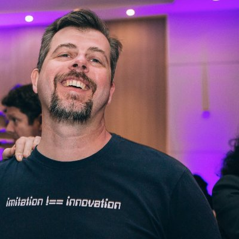
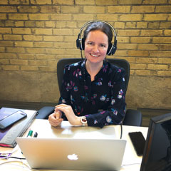
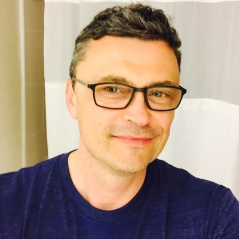
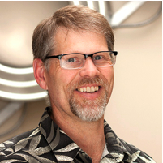

Talks
#a11yTO Conf is thrilled to present a series of talks given by world renowned speakers.
Keynote: Calvin and Hobbes on accessibility
What can a six year old boy and his stuffed tiger tell us about accessibility? Not a great deal as it turns out, but in their own inimitable style, they can provoke us into thinking about accessibility in new and interesting ways.
Léonie Watson

Léonie Watson (AKA Tink) began using the internet in 1993, turned it into a web design career in 1997, and (despite losing her eyesight along the way) has been enjoying herself thoroughly ever since.
Léonie is Communications director and Principal engineer at The Paciello Group (TPG), and also works with Government Digital Service (GDS) on the GOV.UK platform.
As a member of the W3C Advisory Board, and co-chair of the W3C Web Platform WG (working on specs like HTML5), Léonie is closely involved with the web standards community. She is frequently asked to talk about web standards and/or accessibility at conferences.
In her spare time Léonie blogs on tink.uk, writes for tech journals like Smashing magazine, SitePoint.com and Net magazine. She also loves cooking, dancing and drinking tequila (although not necessarily in that order).
Accessibility: No rights without responsibilities
People with disabilities have a right to web accessibility. But what of their responsibility? Both developers and web users with disabilities must work together. Users have a responsibility to talk to developers, who have a responsibility to listen and implement. This talk takes a look at some specific actions everyone can take to push accessibility forward.
Nic Steenhout

Nicolas Steenhout is a veteran of, and passionate advocate for, web accessibility. Nic had taken the lead in building several websites prior to taking up a federally-funded position in the disability sector in the US in 1996. An international speaker, trainer, and consultant, Nic works with government, corporations, and small teams in the areas of both web and physical accessibility. Working with and for thousands of people with disabilities in North America and Australasia, while working with web technologies and their impact, has given Nic a unique insight into the challenges, solutions, and nuts and bolts of web accessibility.
Accessibility and Inclusion Beyond the Screen
Lightning Talk: Digital products often sit within a broader service that continues to unfold beyond the screen. While there are clear guidelines and approaches to accessibility in the digital world, for people who are involved in creating multi-channel experiences, it can feel less clear how to proceed. Be warned! This talk has some ideas and many unanswered questions...
Linn Vizard
Linn is a designer and human who likes glitter. She is currently working at Bridgeable on services and experiences for organizations such as TELUS and The Ministry of the Attorney General. She cut her accessibility teeth in UX at Usability Matters. The world of web and digital accessibility opened up a whole new perspective on design practice for her. Now, she's on a mission to push those designing services to consider accessibility on screen and beyond.
Agile & Accessibility in the real world
"Just put it in the Definition of Done", the Scrum master said as he walked out of the room, convinced of Agile's inherent benefits for collaboration, quality, and user-centrism and even further convinced that accessibility was "a given". We all agreed and cheered to ourselves that the SM was on our side. Reality, however, was a little different. This talk will focus on the trips and missteps along the way to adding accessibility in an agile environment.
Karl Groves
An unstoppable force for change and thought-leader in an industry regarded for saying "No", I'd rather lead by example in saying “Yes, and here's how...". I seek to offer solutions to complex problems relating to universal usability. Together we can meet both our goals: your business goals and my goals to lead the way in accessible user experience. I have over a decade experience in doing IT consulting for the biggest companies in the world and biggest agencies in the US Government. Widely regarded as a pragmatic solution-finder, my work is cited in nearly a dozen books and used on curricula in Human-Computer Interaction across the globe. I lead by doing, I teach from experience, and I succeed by facilitating others' success. When others say "That can't be done" I show them how.
Cake & Code
Do designers need to be able to code? There are many opinions on this subject, but without question it is crucial for designers to understand the capabilities of the platform they are designing for if there is to be an accessible and usable outcome.
Ian Pouncey
Ian Pouncey is User Experience Development Lead at The Paciello Group, a world-class accessibility agency. Formerly he was a Senior Accessibility Specialist and Web Developer at the BBC, and Web Developer at Yahoo! and Bloomberg. He has been working on the Web for over seventeen years, building a wide range of websites, from small sites for local businesses to the 'Metro' version of the Yahoo! home page and the framework on which all BBC web pages are built. He is the author of Beginning CSS: Cascading Style Sheets for Web Design, 3rd Edition, and a member of a number of W3C working groups.
Designing Accessible Web Content for “Older” Users
Accessible web design for people with disabilities often benefits older users. Findings from usability tests with older users show common issues for accessible web design. Surprisingly, many findings can be mapped to the existing Success Criteria in WCAG 2.0. Makoto will come to this conference from Japan, which is the most rapidly aging country on this planet, to share his findings with you.
Makoto Ueki

Web Accessibility Consultant in Japan. Makoto has been contributing to the JIS (Japanese Industrial Standard) Working Group and W3C WCAG Working Group as a web accessibility expert. And he has been a chairman of the Web accessibility Committee in Japan (WAIC) since 2012.
Designing and Developing for Apple TV
As media content delivery has evolved over time, so have the ways in which it’s consumed. This talk is about exploring the benefits and challenges of designing and developing an accessible Apple TV app for our client AMI.
Bianca Manga
Visual Interface Designer at Myplanet.
Enhancing technology through inclusive UX research
Creating a truly accessible experience requires more than compliant markup; it requires UX research with real people. Not sure how to go about collecting feedback from people with disabilities? In this talk, Janna and Jen share insights, lessons learned, and personal stories from their experience conducting UX research with people with cognitive impairments and people who are blind and low vision.
Janna Cameron
By working closely with developers, designers and end users to develop a fuller understanding of how people with disabilities use the web, Janna has parlayed a passion for user research into a career that has helped remove barriers to web applications. Janna is a Senior UX Designer for Manulife. Prior to Manulife, she worked for a decade as an accessibility champion in EdTech.
Jen Krul
Jennifer is currently the Chief Experience Officer at Emmetros, a tech company focused on creating accessible software for people with early- to mid-stage dementia. A long-time user advocate, Jennifer has a passion for understanding user needs and seeing those needs reflected in clear, elegant, and accessible products. She is delighted to use her experience to help make a difference in lives of people living with memory loss.
Everything I Know About Accessibility I Learned from Stack Overflow
Lightening Talk: Accessibility practitioners are great at talking to one another and getting into the nuances of specs and assistive tech. We also tend to live in a bit of a bubble, taking for granted many of the basics with which developers struggle on a daily basis. In this talk I will explore some of the kinds of questions developers ask one another, often with non-ideal answers, using Stack Overflow as my source.
Adrian Roselli

Adrian is a member of the W3C Web Platform Working Group, W3C Accessible Rich Internet Applications Working Group, and W3C Accessibility Task Force. He has written articles for trade journals, web sites, and participated as an author and editor on five web-related books. Back in 1998 he co-founded a software development consulting firm before leaving at the start of 2016 to start all over. Some may recognize Adrian from his days helping to run evolt.org, one of the first communities for web developers. Adrian has been developing for the Web since 1993.
The Good, Bad and Ugly of Screen Reader Web Accessibility
Lightning Talk: A short introduction to screen readers, followed by a walkthrough of some popular and unpopular websites, highlighting where developers have made good, bad and ugly decisions from a screen reader perspective.
Aamer Khan

Aamer Khan is a passionate, vocal and analytical advocate of "Accessibility On Purpose" His feedback ranges from the local bakery to organizations like Microsoft, Meetup.com and Groupon. Starting his career as a Business Analyst he's learned that designing coding and testing can all benefit from an Accessible approach. Currently working at the CNIB (Canadian National Institute for the Blind) as a Senior Project Analyst, he is also active in the community, authoring blog posts on adaptive tech, co-organizing the Get Together Technology (GTT) group and attending A11YTo events.
"How Do You Get This Damn Thing To Stop Talking?!": Web Accessibility Testing (When It's Only Part Of Your Job)
Lightning Talk: I'm not a web developer and I don't need to use assistive technology to access the web. That said I've managed to spend a good part of my career testing out web sites with screen readers and screen magnifiers. Learn about what you should do, what you can do, and what you probably shouldn't do when web accessibility testing is only part of your job. Oh and, spoiler alert, it's CTRL to get JAWS or NVDA to stop talking. Please consider attending anyway.
Phil Springall
Phil Springall is a librarian with ten years of experience in the field of web accessibility testing. He currently works at the Legislative Assembly of Ontario as a Web Editor and spends his free time trying to convince his two and a half year old not to call him by his first name.
Behind the Velvet Rope
Behind every great site or application lies thought, empathy and inclusion. This doesn’t happen by accident, it happens by design. How we get there is as unique, original, and diverse as the people who use our products.
Henny Swan
Henny is Accessible User Experience and Design Lead at The Paciello Group with over 12 years’ experience in making web, mobile and apps accessible with a focus on accessible user experience, audio/video and mobile.
Prior to The Paciello Group Henny worked at the BBC on iPlayer (Web and Mobile), Sports, the Olympics, BBC Live and the BBC Standard Media Player. Henny was also Lead Editor on the BBC Mobile Accessibility Standards and Guidelines. Henny has previously worked for Opera Software, RNIB and Zhaodaola (a Chinese search engine).
Henny has contributed to the World Wide Web Consortium (W3C) Education and Outreach Working Group (EOWG), the User Agent Accessibility Guidelines Working Group (UAAG), as well as been co-lead of the Web Standards Project International Liaison Working Group.
In Defence of Native Form Validation
Lightening Talk: Just because it's not convenient doesn't excuse you from using it.
Paul Grenier
Paul is a JavaScript developer who started developing after two layoffs in tech. Under the cliche, "third time's a charm", he hasn't diverted from this line of work since 2007. Paul tries to share the joys of programming and encourage others to try learning the discipline if they aren't satisfied with their current career.
Journey To Accessibility: Options for High Volume Accessible documents
Current and upcoming legislation is making it imperative that organizations provide accessible documents to their clients. What is involved in document accessibility? How can personal and confidential information be made available in accessible formats? We will discuss best practices for compliance and accommodation for accessible documents, both hard copy & electronic.
Jen Goulden
Jen Goulden has over ten years' experience in the field of document accessibility with the Government of Canada and then as a consultant with Crawford Technologies. She holds a Master's degree in linguistics from the University of Ottawa and is a certified braille transcriber/proofreader.
She speaks English, French and Spanish, and brings together her knowledge of accessible document production as well as her experience as a consumer. Before joining Crawford Technologies as a full-time employee, Jen worked for the Government of Canad as a human resources advisor in official languages and employee performance management. She plays the piano, is an avid reader and loves to travel.
Mobile Web and Native Apps: Simplifying Mobile Accessibility (Web and Native)
Mobile accessibility is an ecosystem of confusing and often incorrect information. In this session, we will discuss the fundamental components of mobile accessibility, explore the connection between Native and Web, and demonstrate how WCAG 2.0 Accessibility Compliance can be successfully and efficiently implemented for Native Android, Native iOS and Mobile Web.
Dylan Barrell

Dylan Barrell is in charge of technology at Deque Systems, a leader in accessibility software and services. He wrote the first accessibility testing developer extension - FireEyes. Founded, and continues to contribute to the axe-core project and related projects like react-axe and axe-webdriverjs.
Chris McMeeking
Chris McMeeking graduated from the University of Michigan with a BSE in Computer Science, winning wards from the Multiple Sclerosis foundation for his contributions to alternative input and augmented communication devices for children with motor control disabilities. He is now a Senior Software Engineer at Deque Systems, architect of Deque’s Native Accessibility analysis solutions and an active member of the W3C’s Mobile Accessibility Task Force.
Progressive Enhancement and Accessibility
Attendees learn what Progressive Enhancement is and its many benefits to web users. The differences between Progressive Enhancement and "graceful degradation" are discussed. Examples of how Progressive Enhancement is implemented in HTML, CSS, and JavaScript are provided and explained.
Dennis Lembrée
Author of @EasyChirp & @WebAxe. Day job at @DequeSystems. Former PayPal/eBay. CPACC. Husband & father. Enjoy espresso, football, and 80s music.
Rethinking web accessibility on Windows
For more than 15 years, screen readers on Windows have consumed web sites in much the same manner: Consuming them in one go and providing their own representation of the web page in a so-called virtual document. As web applications have become more pwide-spread, it has become apparent that this way of consuming web content might no longer be timely. This talk aims to take a look at the status quo and ask some provocative questions on how this paradigm might, or must, change in the future for us to stay competitive and up to date in the more dynamic web application world.
Marco Zehe
Marco works at Mozilla on the quality of Firefox accessibility and also advises developers inside and outside of Mozilla on the correct use of web technologies to make sites and web applications more inclusive. Previously, he worked at a big assistive technology company.
Small Team, Big Company: Accessibility at the scale of eBay
The eBay Accessibility Team share some strategies and procedures they use to provide testing, oversight, and training at the scale of eBay.
Mark Lapole

Mark Lapole is a Lead Product Manager for Accessibility at eBay. He loves golf, watches, doggos, and advocating for the underrepresented.
Luis Garcia
Luis Garcia is a Senior Product Manager for Accessibility at eBay. In his spare time, he participates at Accessibility Camps, evangelizes accessibility to anyone that will listen, and works on various accessibility related side projects. He sometimes plays video games.
The VoiceOver and TalkBack #selfie challenge
Lightening Talk: Hands-on, fast-paced session where you’ll learn how to turn on and use the screen reader that’s probably already on your phone. We’ll cover both iOS and Android and you’ll be encouraged to work with others who have a different level of experience than you. You’ll learn tips on how to test an app (the Camera app). Most important: take a selfie using your screen reader!
Aidan Tierney
Aidan Tierney is Manager of Digital Accessibility at TD Bank where he oversees the accessibility program for customer-facing websites and mobile apps. Aidan has a background in front-end development and user experience. Prior to TD he was a developer and then an accessibility consultant at IBM Interactive Experience specialized in accessibility program strategy for large organizations.
Aidan speaks frequently at industry events including the CSUN Assistive Technology Conference, the Guelph Accessibility Conference, AccessU, and Accessibility Camps in Toronto, Ottawa and the Bay Area.
Jason Thompson
With over 15 years’ experience as a web designer, developer, webmaster and web analyst, Jason has seen it all but has always maintained the key elements of usability and accessibility. An advocate for doing it right the first time but knowing that things can go wrong, patience is his key to getting the project through from concept to completion.
Walking a tightrope; Finding a Balance of Automated and Manual Testing
We all know that automated testing tools for accessibility have limits. The key is leveraging the power of automated tools along with the performing the right manual tests to achieve successful digital compliance.
Kevin Rydberg
Kevin Rydberg is responsible for guiding and supporting businesses and organizations on their journeys to create accessible websites. With more than 15 years of experience in the multimedia and web development space, including enterprise redesign and accessibility overhauls, Kevin is a critical partner for Siteimprove customers when it comes to creating successful and sustainable accessibility programs.
Writing for Every Reader
Our amazingly complex brains all process information differently. Knowing this, we can use language, structure, and media in ways that make our writing reach everyone.
Stephanie Hobson
After abandoning a her desire to be a writer and English teacher for the more lucrative world of web development Stephanie discovered websites require a lot of writing. She is currently combining her passion for front-end development and writing by working on Mozilla’s web documentation site, MDN. Outside of accessibility she is also passionate about web standards, progressive enhancement, analytics, and performance.
Partners & Sponsorships
Diamond Sponsor
Platinum Sponsors
Gold Sponsors
Silver Sponsors
Bronze Sponsors

If you are interested in sponsoring #a11yTOConf, please email us at sponsor@a11yto.com